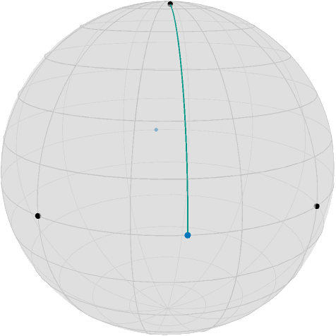
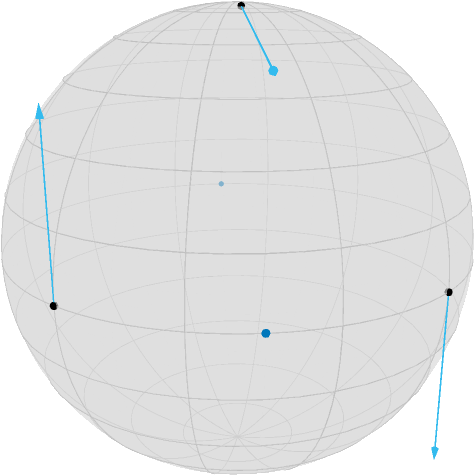
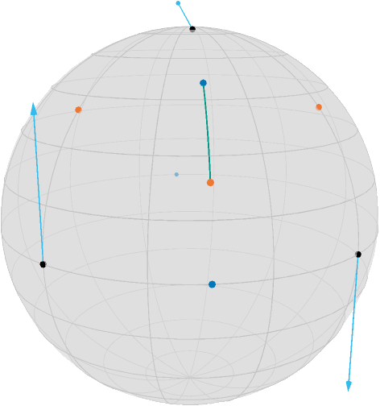
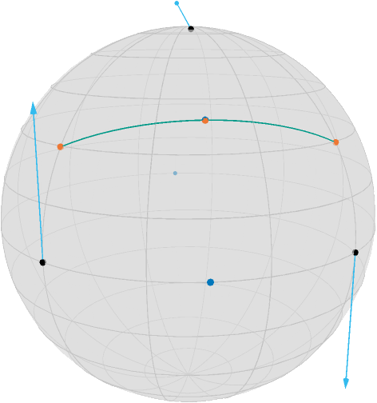

Illustration of the Gradient of a Second Order Difference
This example explains how to compute the gradient of the second order difference mid point model using adjoint_Jacobi_fields.
This example also illustrates the PowerManifold manifold as well as ArmijoLinesearch.
We first initialize the manifold
using Manopt, Manifoldsand we define some colors from Paul Tol
using Colors
black = RGBA{Float64}(colorant"#000000")
TolVibrantBlue = RGBA{Float64}(colorant"#0077BB") # points
TolVibrantOrange = RGBA{Float64}(colorant"#EE7733") # results
TolVibrantCyan = RGBA{Float64}(colorant"#33BBEE") # vectors
TolVibrantTeal = RGBA{Float64}(colorant"#009988") # geoAssume we have two points $x,y$ on the equator of the Sphere $\mathcal M = \mathbb S^2$ and a point $y$ near the north pole
M = Sphere(2)
p = [1.0, 0.0, 0.0]
q = [0.0, 1.0, 0.0]
c = mid_point(M, p, q)
r = shortest_geodesic(M, [0.0, 0.0, 1.0], c, 0.1)
[c, r]2-element Array{Array{Float64,1},1}:
[0.7071067811865475, 0.7071067811865475, 0.0]
[0.11061587104123713, 0.11061587104123713, 0.9876883405951378]Now the second order absolute difference can be stated as (see [Bačák, Bergmann, Steidl, Weinmann, 2016])
where $\mathcal C_{x,z}$ is the set of all mid points $g(\frac{1}{2};x,z)$, where $g$ is a (not necessarily minimizing) geodesic connecting $x$ and $z$.
For illustration we further define the point opposite of
c2 = -c3-element Array{Float64,1}:
-0.7071067811865475
-0.7071067811865475
-0.0and draw the geodesic connecting $y$ and the nearest mid point $c$, namely
T = [0:0.1:1.0...]
geoPts_yc = shortest_geodesic(M, r, c, T)looks as follows using the asymptote_export_S2_signals export
asymptote_export_S2_signals("secondOrderData.asy";
render = asyResolution,
curves = [ geoPts_yc ],
points = [ [x,y,z], [c,c2] ],
colors=Dict(:curves => [TolVibrantTeal], :points => [black, TolVibrantBlue]),
dot_size = 3.5, line_width = 0.75, camera_position = (1.2,1.,.5)
)
render_asymptote("SecondOrderData.asy"; render=2)
Since we moved $r$ 10% along the geodesic from the north pole to $c$, the distance to $c$ is $\frac{9\pi}{20}\approx 1.4137$, and this is also what
costTV2(M, (p, r, q))1.413716694115407returns, see costTV2 for reference. But also its gradient can be easily computed since it is just a distance with respect to $y$ and a concatenation of a geodesic, where the start or end point is the argument, respectively, with a distance. Hence the adjoint differentials adjoint_differential_geodesic_startpoint and adjoint_differential_geodesic_endpoint can be employed, see ∇TV2 for details. we obtain
(Xp, Xr, Xq) = ∇TV2(M, (p, r, q))([-0.0, -4.9676995583751974e-18, -0.7071067811865475], [-0.6984011233337104, -0.6984011233337102, 0.15643446504023084], [4.9676995583751974e-18, 0.0, -0.7071067811865475])When we aim to minimize this, we look at the negative gradient, i.e. we can draw this as
asymptote_export_S2_signals("SecondOrderGradient.asy";
points = [ [x,y,z], [c,c2] ],
colors=Dict(:tvectors => [TolVibrantCyan], :points => [black, TolVibrantBlue]),
dot_size = 3.5, line_width = 0.75, camera_position = (1.2,1.,.5)
)
render_asymptote("SecondOrderGradient.asy"; render=2)
If we now perform a gradient step, we obtain the three points
pn, rn, qn = exp.(Ref(M), [p, r, q], [-Xp, -Xr, -Xq])3-element Array{Array{Float64,1},1}:
[0.7602445970756302, 4.563951614149274e-18, 0.6496369390800624]
[0.6474502912317517, 0.6474502912317516, 0.4020152245473301]
[-4.563951614149274e-18, 0.7602445970756302, 0.6496369390800624]as well we the new mid point
cn = mid_point(M, pn, qn)
geoPts_yncn = shortest_geodesic(M, rn, cn, T)and obtain the new situation
asymptote_export_S2_signals("SecondOrderMin1.asy";
points = [ [x,y,z], [c,c2,cn], [xn,yn,zn] ],
curves = [ geoPts_yncn ] ,
tangent_vectors = [Tuple.([ [p, -Xp], [r, Xr], [q, Xq] ])],
colors=Dict(:tvectors => [TolVibrantCyan],
:points => [black, TolVibrantBlue, TolVibrantOrange],
:curves => [TolVibrantTeal]
),
dot_size = 3.5, line_width = 0.75, camera_position = (1.2,1.,.5)
)
render_asymptote("SecondOrderMin1.asy"; render=2)#md
One can see, that this step slightly “overshoots”, i.e. $r$ is now even below $c$. and the cost function is still at
costTV2(M, (pn, rn, qn))0.46579428818288593But we can also search for the best step size using linesearch_backtrack on the PowerManifold manifold $\mathcal N = \mathcal M^3 = (\mathbb S^2)^3$
x = [p, r, q]
N = PowerManifold(M, NestedPowerRepresentation(), 3)
s = linesearch_backtrack(
M,
x -> costTV2(M, Tuple(x)),
x,
[∇TV2(M, (p, r, q))...], # transform from tuple to PowTVector
1.0, # initial stepsize guess
0.999, # decrease
0.96, #contract
)0.022450430469634693and for the new points
pm, rm, qm = exp.(Ref(M), [p, r, q], s * [-Xp, -Xr, -Xq])
cm = mid_point(M, pm, qm)
geoPts_xmzm = shortest_geodesic(M, pm, qm, T)we obtain again with
asymptote_export_S2_signals("SecondOrderMin2.asy";
points = [ [x,y,z], [c,c2,cm], [xm,ym,zm] ],
curves = [ geoPts_xmzm ] ,
tangent_vectors = [Tuple.( [-ξx, -ξy, -ξz], [x, y, z] )],
colors=Dict(:tvectors => [TolVibrantCyan],
:points => [black, TolVibrantBlue, TolVibrantOrange],
:curves => [TolVibrantTeal]
),
dot_size = 3.5, line_width = 0.75, camera_position = (1.2,1.,.5)
)
Here, the cost function yields
costTV2(M, (pm, rm, qm))1.368817718713843which is nearly zero, as one can also see, since the new center $c$ and $r$ are quite close.
Literature
- [Bačák, Bergmann, Steidl, Weinmann, 2016]
Bačák, M; Bergmann, R.; Steidl, G; Weinmann, A.:
A second order nonsmooth variational model for restoring manifold-valued images. , SIAM Journal on Scientific Computations, Volume 38, Number 1, pp. A567–597, doi: 10.1137/15M101988X